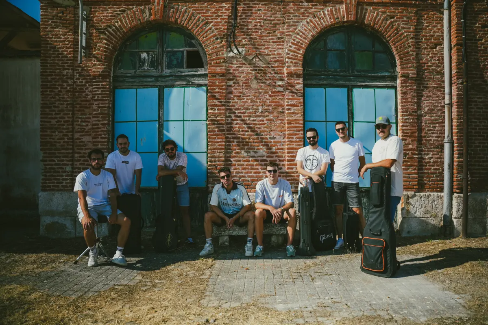
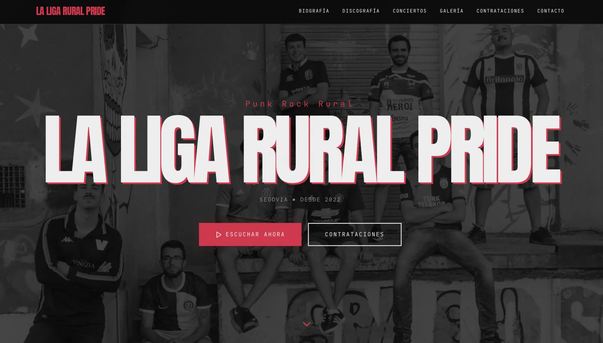
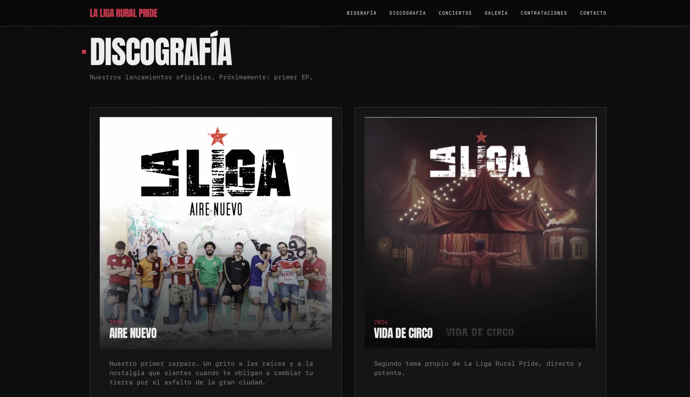
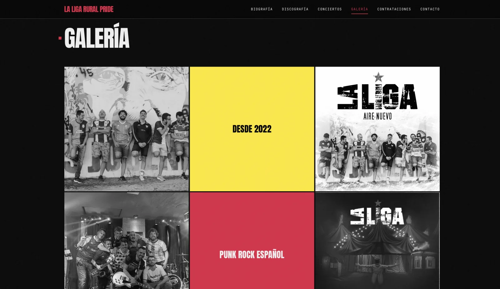
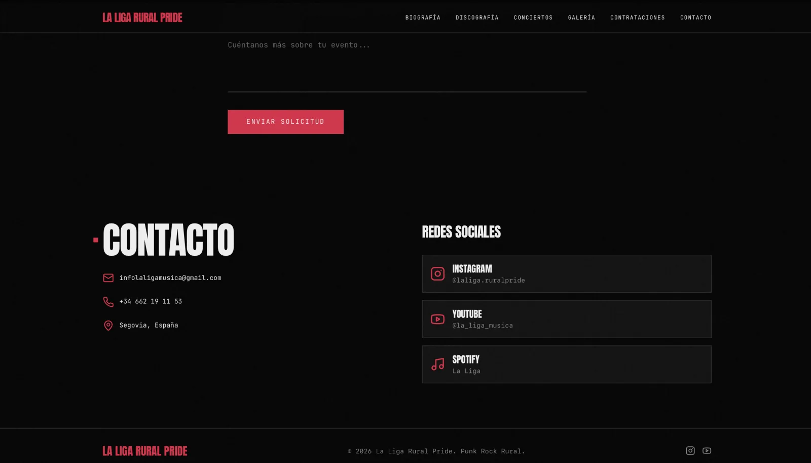

Secciones del grupo
Inicio, biografía, calendario de actuaciones, discografía, galería y contacto en una sola página.
2025 – Actualidad · En solitario · Publicada
Web oficial de un grupo de música, rehecha como SPA en React con Tailwind CSS.

La Liga Rural Pride es la web oficial de un grupo de música, reescrita por completo como una Single Page Application en React. Presenta al grupo, anuncia sus actuaciones y facilita el contacto con una experiencia fluida y rápida.
Empezó como una web estática en HTML y CSS y la migré a una arquitectura de componentes en React con Tailwind CSS y componentes accesibles de Radix UI. Desde 2025 la sigo actualizando poco a poco.
Inicio, biografía, calendario de actuaciones, discografía, galería y contacto en una sola página.
Enfoque mobile-first, priorizando la claridad y el ritmo visual, con animaciones fluidas y soporte de temas.
Arquitectura por componentes con gestión de dependencias moderna y foco en el rendimiento.
Componentes de Radix UI y navegación sin recargas de página.
Algunas secciones de la web. Pulsa una captura para ampliarla.




Puedo enseñarte el proyecto en detalle o contarte cómo lo construí.